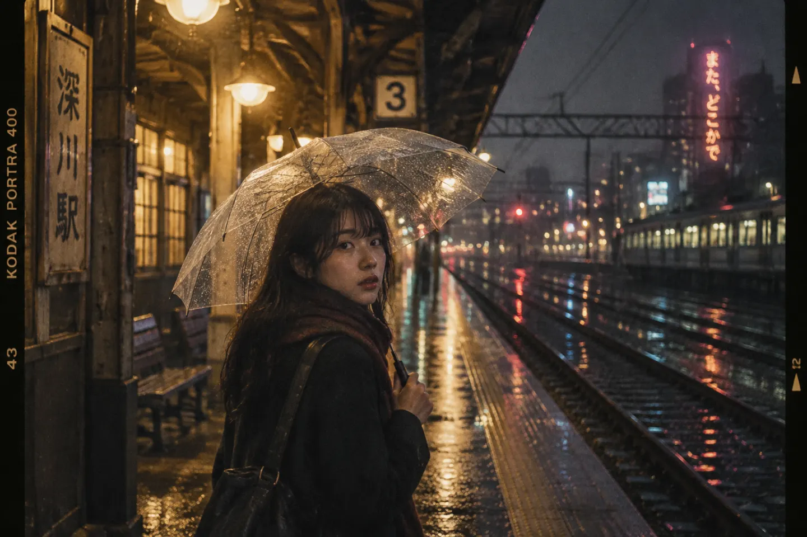

第 3 集 · 制作交接
4 个在生成，2 个等你确认。其余都排好了。

待你挑选
站台 · 人群背景
4 个候选，选一个收工
需要处理
天台 · 黄昏光比
审核拦截，换个说法重来
图像 · 雨夜远景
车站 · 雨夜远景
声音 · 对白合成
第 03 场 · 对白合成
视频 · 粗剪
第 3 集 · 粗剪
系统正常 · 6/8 连接可读 · 2 分钟前同步
 雨夜重逢 · 第 3 集
正常
周三 · 11 月 5 日
雨夜重逢 · 第 3 集
正常
周三 · 11 月 5 日